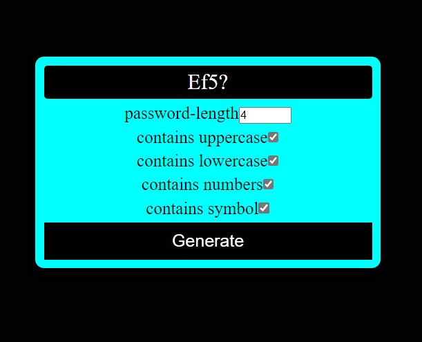
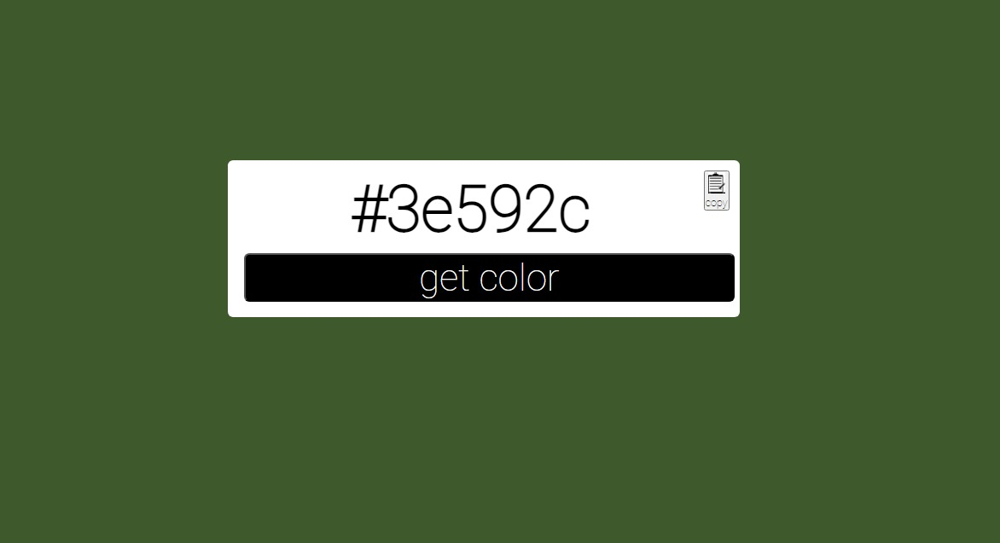

Random Passsword Generator

- Implemented a random password generator that creates passwords of varying length and complexity.
- Designed the generator to generate secure passwords for enhanced data protection.
- Utilized action verbs to generate strong passwords that are difficult to guess or crack.
- Tested and validated the password generator to ensure its effectiveness and accuracy.
- Enhanced data security by generating unique and unpredictable passwords for different accounts.
- Streamlined the password generation process, saving time and effort for users.
- Promoted strong password practices to mitigate the risk of unauthorized access and data breaches.
- Increased user convenience by providing a reliable tool for generating password suggestions.
- Supported users in creating strong and unique passwords for online accounts and sensitive information.
Colour Generator

- Designed and developed a color generator application that creates random colors and their corresponding color codes
- Programmed the application to generate an extensive range of colors with hexadecimal values
- Implemented an intuitive user interface to easily display the generated color and its corresponding code
- Conducted extensive testing to ensure accuracy and reliability of the color generation algorithm
- Successfully integrated the color generator into a user-friendly website, allowing users to easily access and utilize the tool
- Demonstrated strong problem-solving skills and attention to detail throughout the development process
- Effectively utilized programming skills and creativity to deliver a functional and visually appealing color generator application.